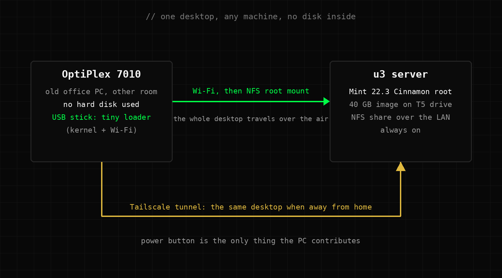
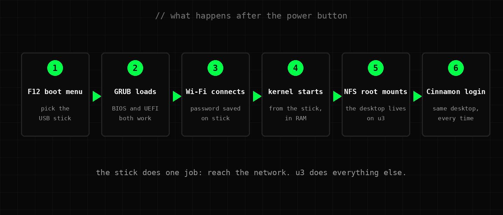
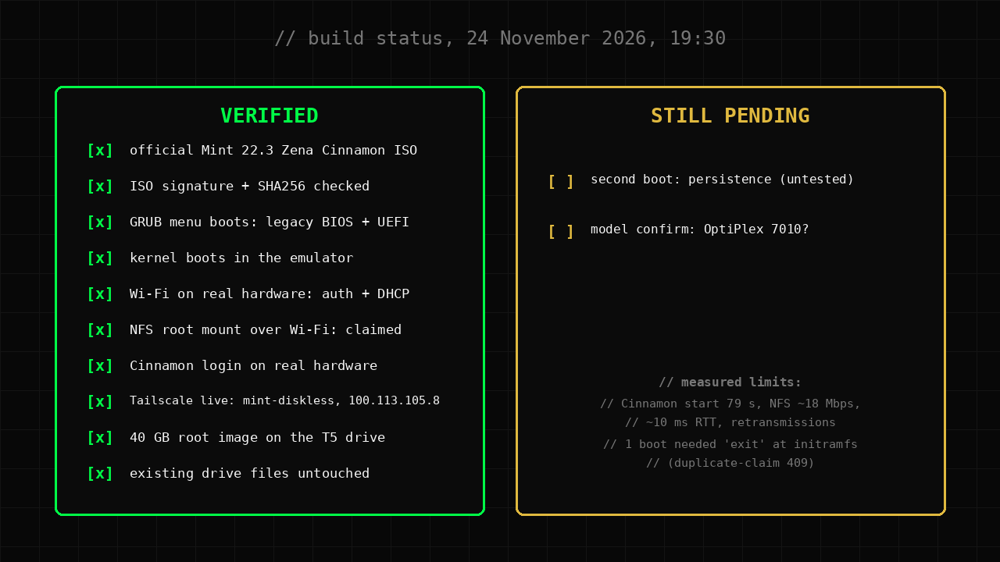

Diskless Linux Mint: one desktop that boots from my home network
LOGIN VERIFIED ON REAL HARDWARE The desktop works. On 24 November around 19:30 the OptiPlex booted from the Kingston stick over Wi-Fi, mounted the NFS root from u3, showed the greeter, I logged in, and the Cinnamon desktop with its panel and the Mint Welcome window was on the real screen. Tailscale connected by itself. It works, and it is slow over Wi-Fi; the measured limits are below. The parts still unproven carry a yellow badge. Total cost so far: 0 DKK.
The idea: the PC stays empty
I have an old Dell OptiPlex standing in another room, and I want a full Linux desktop on it without installing anything on the machine itself. The desktop, the files and the settings live on my home server (u3) on its external drive. Any machine that can reach the network should boot into the same desktop and pick up where I left off. With Tailscale on top, that desktop should also be reachable when I am away from home.
The method
The machine boots from a small USB stick. The stick holds a tiny Linux loader: a boot menu, a kernel and just enough software to connect to Wi-Fi. Once the network is up, the loader mounts the real desktop over NFS from the u3 server and hands over. From that point the PC is a display and a keyboard: every program runs from the network root, and the machine's own disk is never touched. My AI assistant built the server side; I make the decisions and do the physical booting.

Why not boot over Wi-Fi directly
Ordinary PC firmware can only network-boot from a cable. PXE over Wi-Fi basically does not exist in consumer machines, and the OptiPlex is no exception. So the stick has exactly one job: start fast, connect Wi-Fi and get out of the way. Machines with a network cable will be able to skip the stick and boot from netboot.xyz running in Docker on u3, the cabled variant of the same setup.

What is verified so far
- The official Mint 22.3 Zena Cinnamon ISO, with signature and SHA256 checked before anything was installed. The installed root reports exactly that release, kernel 6.14.0-37.
- The loader reaches its boot menu in an emulator under both legacy BIOS and UEFI, and the kernel starts. That proves the boot path, nothing more.
- Wi-Fi works on the real hardware: on the first live boot the loader authenticated, associated and got an address from the router (DHCP), 24 November 18:07.
- The NFS root mount over Wi-Fi: the corrected loader claimed and mounted the desktop root from u3, about 49,500 NFS calls on that first NFS boot, 24 November around 19:00.
- The Cinnamon login on real hardware: the OptiPlex booted over Wi-Fi, mounted the NFS root, showed the greeter, I logged in, and the Cinnamon desktop with its panel and the Mint Welcome window was on the screen, 24 November around 19:30.
- Automatic Tailscale connection: the desktop joined my tailnet by itself as mint-diskless (100.113.105.8) on the first login, no manual steps.
- The fixes it took on real hardware: keep Mint's NetworkManager off the root-carrying Wi-Fi and hand DNS over cleanly. Both live in the root on u3; the stick is unchanged.
- The desktop root is a fresh 40 GB ext4 image on the server's external drive. The drive's existing files are untouched and its health checks are clean.
- The first loader build contained no passwords. The final build carries the Wi-Fi password so the machine connects by itself, so that stick stays at home.

Not proven yet
These parts still wait: PENDING
- Persistence across a second boot. The first login works; the next boot was not tested.
- The exact target model. Everything points to a Dell OptiPlex 7010, but that is unconfirmed.
The limits, measured
- Speed. The Cinnamon desktop is very slow over Wi-Fi NFS: Cinnamon recorded 79 seconds for its own startup, and one NFS sample showed about 18 Mbps with about 10 ms RTT and retransmissions. The desktop works, but it is not pleasant to use.
- One boot needed a manual step: a duplicate-claim 409 stopped it at the initramfs prompt until I typed 'exit'. The boot is not yet guaranteed hands-free.
- Chrome is not installed in the desktop.
What it costs
0 DKK so far. The PC is an old office machine, the server and its drive were already here, and the software is free: Linux Mint, the netboot.xyz tooling, NFS and Tailscale's free plan. The only thing left to spend is an hour with a spare USB stick.
The verdict: the idea works end to end for 0 DKK, but Wi-Fi NFS is too slow for daily use. The next step is a different design: local Linux installs on the machines with central accounts, keeping the same goal of one setup everywhere. This article stays as the record of the experiment.
Back to the blog